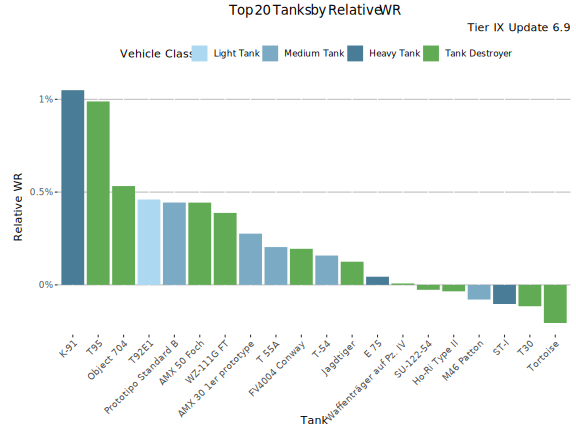
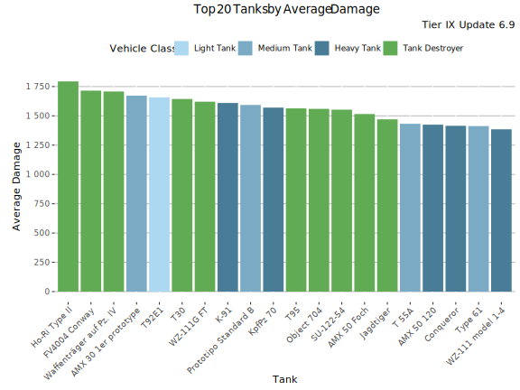
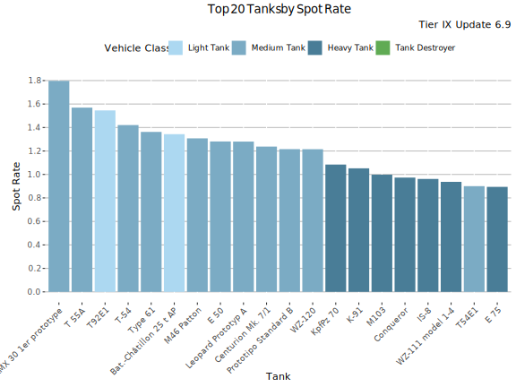
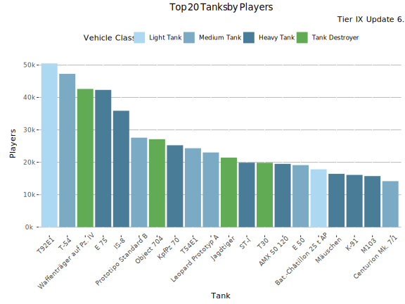
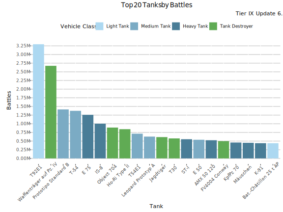
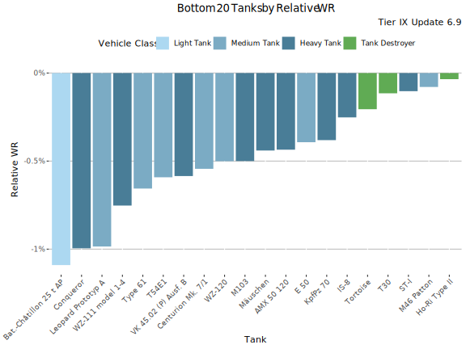
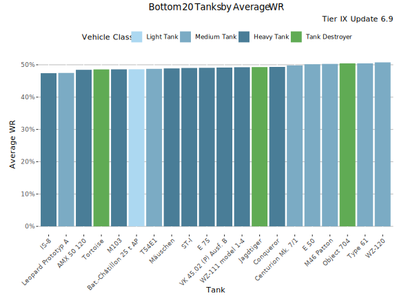
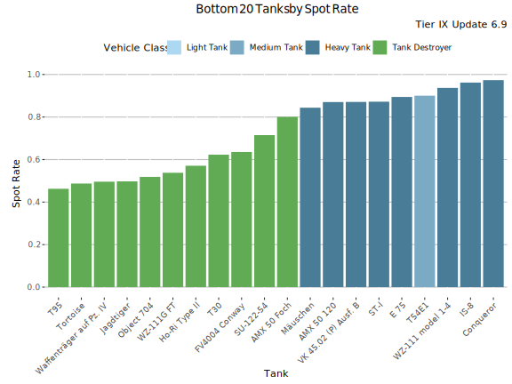
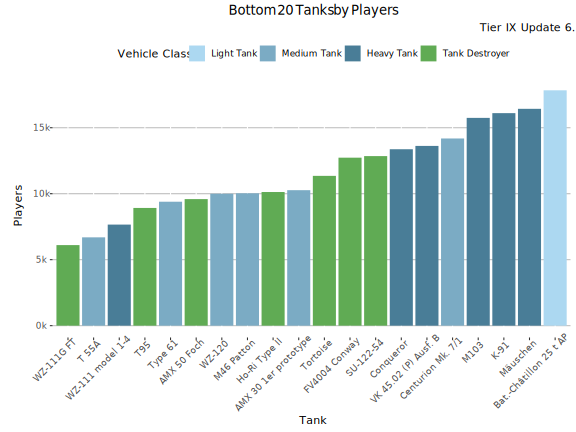
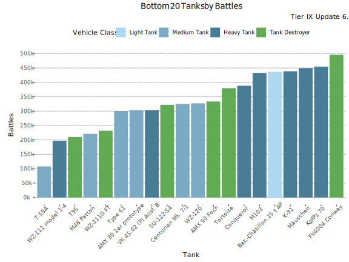

Tier IX Tanks
The Best Performing Tanks
Relative WR
The graph shows the tanks with the highest Relative WR. That is the average of players’ WR in a tank compared to their average WR at the tier (in all same tier tanks). Relative WR is a measure of the performance/strength of the tank.
- All the statistics are about battles fought during the update 6.9 only.
- The impact of “Stock-grind battles” is reduced based on tier-specific requirement for total battles at the end of the update. Only players with more than 0-152 (depending on the tier) battles in a tank in the end of the update are included to eliminate the impact of the first battles in the tank (with sub-100% crew / modules).
- The players need to have 10-20 battles in a tank and 20-40 battles at the tier during the update.
- Average WR is the players’s average WR in the tank
- Player WR at Tier is the average WR of the players of the tank at the tier. Since different tiers have different difficulty, it is more meaningful to compare players’ performance in the same tier tanks.

Highest Relative WR - Table
| Tank | Relative WR | Average WR | Player WR at Tier | Players | Battles/Player | Vehicle Class | Tank type |
|---|---|---|---|---|---|---|---|
| T95 | 1.16% | 52.4% | 51.2% | 840 | 85 | Tank Destroyer | Researchable |
| K-91 | 1% | 53.3% | 52.3% | 4 051 | 67 | Heavy Tank | Premium |
| Object 704 | 0.62% | 50.8% | 50.2% | 4 101 | 89 | Tank Destroyer | Researchable |
| T92E1 | 0.51% | 54.6% | 54.1% | 12 249 | 145 | Light Tank | Researchable |
| Prototipo Standard B | 0.49% | 52.6% | 52.1% | 5 937 | 114 | Medium Tank | Researchable |
| AMX 50 Foch | 0.49% | 52.9% | 52.4% | 1 142 | 105 | Tank Destroyer | Researchable |
| WZ-111G FT | 0.44% | 52.5% | 52.1% | 1 125 | 96 | Tank Destroyer | Researchable |
| T-54 | 0.27% | 51.3% | 51% | 7 182 | 78 | Medium Tank | Researchable |
| Jagdtiger | 0.25% | 49.8% | 49.6% | 2 537 | 82 | Tank Destroyer | Researchable |
| FV4004 Conway | 0.14% | 53% | 52.9% | 2 233 | 101 | Tank Destroyer | Researchable |
| T 55A | 0.14% | 53% | 52.9% | 967 | 56 | Medium Tank | Premium |
| E 75 | 0.11% | 49.8% | 49.7% | 4 913 | 83 | Heavy Tank | Researchable |
| AMX 30 1er prototype | 0.1% | 56.7% | 56.6% | 2 650 | 81 | Medium Tank | Premium |
| Waffenträger auf Pz. IV | 0.05% | 52.4% | 52.4% | 12 727 | 127 | Tank Destroyer | Researchable |
| M46 Patton | -0.04% | 50.3% | 50.4% | 1 020 | 72 | Medium Tank | Researchable |
| SU-122-54 | -0.09% | 51.4% | 51.5% | 1 579 | 81 | Tank Destroyer | Researchable |
| T30 | -0.1% | 51.6% | 51.7% | 3 298 | 85 | Tank Destroyer | Researchable |
| Tortoise | -0.14% | 48.8% | 49% | 1 390 | 106 | Tank Destroyer | Researchable |
| Ho-Ri Type II | -0.15% | 55.3% | 55.5% | 1 488 | 211 | Tank Destroyer | Researchable |
| ST-I | -0.15% | 49.5% | 49.6% | 1 990 | 87 | Heavy Tank | Researchable |
Highest Average WR
This graph shows the tanks with the highest average WR at tier IX during update 6.9. Player WR denotes the tank’s players’ average WR across all the tanks during the update. Only tanks with more than 400 players are listed. This may filter out few upcoming tanks that are being tested.

Highest Average WR - Table
Average WR denotes average WR in a tank across all the players during the update. Player WR denotes the tank’s players’ average WR across all the tanks during the update.
| Tank | Average WR | Player WR at Tier | Players | Battles/Player | Vehicle Class | Tank type |
|---|---|---|---|---|---|---|
| AMX 30 1er prototype | 56.5% | 56.5% | 3 414 | 76 | Medium Tank | Premium |
| Ho-Ri Type II | 55.2% | 55.3% | 1 858 | 213 | Tank Destroyer | Researchable |
| T92E1 | 54.4% | 54% | 16 409 | 145 | Light Tank | Researchable |
| K-91 | 52.8% | 52.1% | 5 671 | 64 | Heavy Tank | Premium |
| FV4004 Conway | 52.8% | 52.7% | 2 792 | 105 | Tank Destroyer | Researchable |
| T 55A | 52.7% | 52.6% | 1 291 | 59 | Medium Tank | Premium |
| AMX 50 Foch | 52.6% | 52.3% | 1 460 | 111 | Tank Destroyer | Researchable |
| WZ-111G FT | 52.4% | 52.1% | 1 424 | 95 | Tank Destroyer | Researchable |
| T95 | 52.3% | 51.4% | 1 168 | 93 | Tank Destroyer | Researchable |
| Prototipo Standard B | 52.3% | 51.9% | 7 622 | 119 | Medium Tank | Researchable |
| KpfPz 70 | 52.2% | 52.6% | 5 581 | 60 | Heavy Tank | Premium |
| Waffenträger auf Pz. IV | 52.1% | 52.1% | 17 636 | 128 | Tank Destroyer | Researchable |
| T30 | 51.4% | 51.5% | 4 304 | 86 | Tank Destroyer | Researchable |
| SU-122-54 | 51.2% | 51.4% | 1 987 | 86 | Tank Destroyer | Researchable |
| T-54 | 51.1% | 50.9% | 10 929 | 85 | Medium Tank | Researchable |
| WZ-120 | 50.8% | 51.2% | 1 926 | 94 | Medium Tank | Researchable |
| Type 61 | 50.6% | 51.2% | 1 669 | 100 | Medium Tank | Researchable |
| Object 704 | 50.5% | 50.1% | 5 881 | 96 | Tank Destroyer | Researchable |
| E 50 | 50.4% | 50.6% | 3 106 | 91 | Medium Tank | Researchable |
| M46 Patton | 50% | 50% | 1 409 | 80 | Medium Tank | Researchable |
Highest Average Damage

Highest Average Damage - Table
| Tank | Average Damage | Average WR | Player WR at Tier | Players | Battles/Player | Vehicle Class | Tank type |
|---|---|---|---|---|---|---|---|
| Ho-Ri Type II | 1799 | 55.2% | 55.3% | 1 858 | 213 | Tank Destroyer | Researchable |
| FV4004 Conway | 1761 | 55.9% | 54.2% | 6 300 | 50 | Tank Destroyer | Researchable |
| Waffenträger auf Pz. IV | 1731 | 53.5% | 52.7% | 33 288 | 71 | Tank Destroyer | Researchable |
| T30 | 1725 | 55.1% | 53.6% | 13 887 | 31 | Tank Destroyer | Researchable |
| T92E1 | 1691 | 55.3% | 54.6% | 23 450 | 104 | Light Tank | Researchable |
| WZ-111G FT | 1689 | 55.5% | 53.4% | 2 988 | 48 | Tank Destroyer | Researchable |
| Prototipo Standard B | 1659 | 54.4% | 53.1% | 13 037 | 73 | Medium Tank | Researchable |
| K-91 | 1646 | 53.8% | 52.5% | 16 104 | 27 | Heavy Tank | Premium |
| AMX 30 1er prototype | 1643 | 56.9% | 56.1% | 10 267 | 30 | Medium Tank | Premium |
| Object 704 | 1626 | 53.9% | 51.4% | 15 736 | 40 | Tank Destroyer | Researchable |
| SU-122-54 | 1624 | 55.4% | 53.6% | 7 328 | 27 | Tank Destroyer | Researchable |
| T95 | 1605 | 56.5% | 52.6% | 4 696 | 27 | Tank Destroyer | Researchable |
| AMX 50 Foch | 1573 | 57.2% | 53.5% | 3 783 | 46 | Tank Destroyer | Researchable |
| KpfPz 70 | 1554 | 53.1% | 53.1% | 25 253 | 18 | Heavy Tank | Premium |
| Jagdtiger | 1551 | 53% | 51.1% | 11 909 | 32 | Tank Destroyer | Researchable |
| Conqueror | 1498 | 54.1% | 52.1% | 6 906 | 33 | Heavy Tank | Researchable |
| WZ-111 model 1-4 | 1487 | 55.3% | 52.7% | 3 123 | 30 | Heavy Tank | Researchable |
| AMX 50 120 | 1479 | 52.3% | 50.9% | 10 665 | 31 | Heavy Tank | Researchable |
| M46 Patton | 1459 | 55.5% | 52.5% | 5 711 | 23 | Medium Tank | Researchable |
| Type 61 | 1456 | 54.4% | 52.4% | 4 801 | 38 | Medium Tank | Researchable |
Highest Spot Rate

Highest Spot Rate - Table
| Tank | Spot Rate | Average WR | Player WR at Tier | Players | Battles/Player | Vehicle Class | Tank type |
|---|---|---|---|---|---|---|---|
| AMX 30 1er prototype | 1.81 | 56.9% | 56.1% | 10 267 | 30 | Medium Tank | Premium |
| T 55A | 1.61 | 52.6% | 52.6% | 6 693 | 16 | Medium Tank | Premium |
| T92E1 | 1.60 | 55.3% | 54.6% | 23 450 | 104 | Light Tank | Researchable |
| T-54 | 1.51 | 53.5% | 52.1% | 35 127 | 30 | Medium Tank | Researchable |
| Bat.-Châtillon 25 t AP | 1.46 | 51.8% | 51.6% | 8 818 | 27 | Light Tank | Researchable |
| M46 Patton | 1.43 | 55.5% | 52.5% | 5 711 | 23 | Medium Tank | Researchable |
| Type 61 | 1.40 | 54.4% | 52.4% | 4 801 | 38 | Medium Tank | Researchable |
| Leopard Prototyp A | 1.39 | 51% | 50.2% | 13 782 | 31 | Medium Tank | Researchable |
| E 50 | 1.38 | 54.5% | 52.4% | 9 839 | 32 | Medium Tank | Researchable |
| Centurion Mk. 7/1 | 1.32 | 54.2% | 52.5% | 8 424 | 25 | Medium Tank | Researchable |
| Prototipo Standard B | 1.29 | 54.4% | 53.1% | 13 037 | 73 | Medium Tank | Researchable |
| WZ-120 | 1.28 | 53.9% | 52.5% | 4 898 | 41 | Medium Tank | Researchable |
| KpfPz 70 | 1.11 | 53.1% | 53.1% | 25 253 | 18 | Heavy Tank | Premium |
| K-91 | 1.09 | 53.8% | 52.5% | 16 104 | 27 | Heavy Tank | Premium |
| M103 | 1.05 | 52.7% | 50.8% | 9 262 | 30 | Heavy Tank | Researchable |
| Conqueror | 1.04 | 54.1% | 52.1% | 6 906 | 33 | Heavy Tank | Researchable |
| IS-8 | 1.04 | 51.1% | 49.5% | 23 255 | 31 | Heavy Tank | Researchable |
| WZ-111 model 1-4 | 1.02 | 55.3% | 52.7% | 3 123 | 30 | Heavy Tank | Researchable |
| T54E1 | 0.98 | 52.1% | 51.2% | 12 651 | 35 | Medium Tank | Researchable |
| E 75 | 0.96 | 52.8% | 51% | 25 897 | 33 | Heavy Tank | Researchable |
Most popular Tanks

Most played Tanks
This graph shows the most played tanks by number of battles during the update 6.9.

Most Played Tanks - Table
| Tank | Battles | Average WR | Player WR at Tier | Players | Battles/Player | Vehicle Class | Tank type |
|---|---|---|---|---|---|---|---|
| T92E1 | 3.30M | 53.2% | 52.9% | 50 480 | 65 | Light Tank | Researchable |
| Waffenträger auf Pz. IV | 2.70M | 52.2% | 51.8% | 42 617 | 62 | Tank Destroyer | Researchable |
| Prototipo Standard B | 1.40M | 53.1% | 52.4% | 27 590 | 51 | Medium Tank | Researchable |
| T-54 | 1.40M | 52.2% | 51.2% | 47 283 | 29 | Medium Tank | Researchable |
| E 75 | 1.30M | 50.9% | 49.9% | 42 323 | 30 | Heavy Tank | Researchable |
| IS-8 | 1.00M | 49.3% | 48.3% | 35 891 | 28 | Heavy Tank | Researchable |
| Object 704 | 0.88M | 52.5% | 50.8% | 27 118 | 33 | Tank Destroyer | Researchable |
| Ho-Ri Type II | 0.84M | 54.9% | 55.4% | 10 127 | 83 | Tank Destroyer | Researchable |
| T54E1 | 0.71M | 50.4% | 50.3% | 24 338 | 29 | Medium Tank | Researchable |
| Leopard Prototyp A | 0.63M | 49% | 49.2% | 23 027 | 27 | Medium Tank | Researchable |
| Jagdtiger | 0.61M | 51.4% | 50.2% | 21 445 | 29 | Tank Destroyer | Researchable |
| T30 | 0.57M | 53.6% | 52.6% | 19 848 | 29 | Tank Destroyer | Researchable |
| ST-I | 0.55M | 51.8% | 50.4% | 19 882 | 28 | Heavy Tank | Researchable |
| E 50 | 0.54M | 52.1% | 51.3% | 19 129 | 28 | Medium Tank | Researchable |
| AMX 50 120 | 0.52M | 50.4% | 50% | 19 517 | 27 | Heavy Tank | Researchable |
| FV4004 Conway | 0.50M | 54.8% | 53.7% | 12 730 | 39 | Tank Destroyer | Researchable |
| KpfPz 70 | 0.45M | 53.1% | 53.1% | 25 253 | 18 | Heavy Tank | Premium |
| Mäuschen | 0.45M | 49.8% | 50% | 16 432 | 27 | Heavy Tank | Researchable |
| K-91 | 0.44M | 53.8% | 52.5% | 16 104 | 27 | Heavy Tank | Premium |
| Bat.-Châtillon 25 t AP | 0.44M | 50.6% | 50.8% | 17 835 | 24 | Light Tank | Researchable |
Lowest Performing Tanks
Lowest Relative WR
The graph shows the tanks with the lowest Relative WR. That is the average of players’ WR in a tank compared to their average WR at the tier (in all same tier tanks). Relative WR is a measure of the performance/strength of the tank.
- All the statistics are about battles fought during the update 6.9 only.
- The impact of “Stock-grind battles” is reduced based on tier-specific requirement for total battles at the end of the update. Only players with more than 0-152 (depending on the tier) battles in a tank in the end of the update are included to eliminate the impact of the first battles in the tank (with sub-100% crew / modules).
- The players need to have 10-20 battles in a tank and 20-40 battles at the tier during the update.
- Average WR is the players’s average WR in the tank
- Player WR at Tier is the average WR of the players of the tank at the tier. Since different tiers have different difficulty, it is more meaningful to compare players’ performance in the same tier tanks.

Lowest Relative WR - Table
| Tank | Relative WR | Average WR | Player WR at Tier | Players | Battles/Player | Vehicle Class | Tank type |
|---|---|---|---|---|---|---|---|
| Bat.-Châtillon 25 t AP | -1.37% | 48.6% | 49.9% | 1 880 | 77 | Light Tank | Researchable |
| Conqueror | -1.23% | 49.3% | 50.6% | 1 581 | 89 | Heavy Tank | Researchable |
| Leopard Prototyp A | -0.98% | 48.2% | 49.2% | 2 879 | 82 | Medium Tank | Researchable |
| WZ-111 model 1-4 | -0.97% | 49.3% | 50.3% | 756 | 85 | Heavy Tank | Researchable |
| VK 45.02 (P) Ausf. B | -0.8% | 49% | 49.8% | 1 380 | 77 | Heavy Tank | Researchable |
| M103 | -0.67% | 48.8% | 49.5% | 1 985 | 80 | Heavy Tank | Researchable |
| T54E1 | -0.64% | 49.1% | 49.7% | 3 193 | 87 | Medium Tank | Researchable |
| Centurion Mk. 7/1 | -0.63% | 50.3% | 51% | 1 495 | 78 | Medium Tank | Researchable |
| Type 61 | -0.63% | 50.8% | 51.4% | 1 270 | 97 | Medium Tank | Researchable |
| KpfPz 70 | -0.56% | 52.3% | 52.8% | 4 088 | 62 | Heavy Tank | Premium |
| Mäuschen | -0.55% | 49.1% | 49.7% | 1 323 | 87 | Heavy Tank | Researchable |
| WZ-120 | -0.54% | 51% | 51.5% | 1 495 | 91 | Medium Tank | Researchable |
| AMX 50 120 | -0.48% | 48.8% | 49.2% | 2 581 | 83 | Heavy Tank | Researchable |
| E 50 | -0.32% | 50.3% | 50.6% | 2 292 | 86 | Medium Tank | Researchable |
| IS-8 | -0.28% | 48% | 48.3% | 4 230 | 78 | Heavy Tank | Researchable |
| ST-I | -0.15% | 49.5% | 49.6% | 1 990 | 87 | Heavy Tank | Researchable |
| Ho-Ri Type II | -0.15% | 55.3% | 55.5% | 1 488 | 211 | Tank Destroyer | Researchable |
| Tortoise | -0.14% | 48.8% | 49% | 1 390 | 106 | Tank Destroyer | Researchable |
| T30 | -0.1% | 51.6% | 51.7% | 3 298 | 85 | Tank Destroyer | Researchable |
| SU-122-54 | -0.09% | 51.4% | 51.5% | 1 579 | 81 | Tank Destroyer | Researchable |
Lowest Average WR
This graph shows the tanks with the lowest average WR at tier IX during update 6.9. Player WR denotes the tank’s players’ average WR across all the tanks during the update. Only tanks with more than 400 players are listed. This may filter out few upcoming tanks that are being tested.

Lowest Average WR - Table
Average WR denotes average WR in a tank accross all the players during the update. Player WR denotes the tank’s players’ average WR accross all the tanks during the update.
| Tank | Average WR | Player WR at Tier | Players | Battles/Player | Vehicle Class | Tank type |
|---|---|---|---|---|---|---|
| IS-8 | 47.6% | 47.8% | 7 367 | 86 | Heavy Tank | Researchable |
| Leopard Prototyp A | 47.6% | 48.3% | 4 255 | 90 | Medium Tank | Researchable |
| Bat.-Châtillon 25 t AP | 48.4% | 49.4% | 2 453 | 81 | Light Tank | Researchable |
| AMX 50 120 | 48.5% | 48.8% | 3 370 | 86 | Heavy Tank | Researchable |
| M103 | 48.5% | 49% | 2 867 | 85 | Heavy Tank | Researchable |
| Tortoise | 48.6% | 48.8% | 1 933 | 113 | Tank Destroyer | Researchable |
| VK 45.02 (P) Ausf. B | 48.8% | 49.4% | 1 832 | 79 | Heavy Tank | Researchable |
| T54E1 | 48.8% | 49.3% | 4 222 | 92 | Medium Tank | Researchable |
| Mäuschen | 48.9% | 49.3% | 2 042 | 92 | Heavy Tank | Researchable |
| ST-I | 49% | 49.1% | 3 036 | 92 | Heavy Tank | Researchable |
| Conqueror | 49.2% | 50.1% | 2 144 | 94 | Heavy Tank | Researchable |
| WZ-111 model 1-4 | 49.2% | 50% | 950 | 89 | Heavy Tank | Researchable |
| E 75 | 49.3% | 49.2% | 8 072 | 93 | Heavy Tank | Researchable |
| Jagdtiger | 49.6% | 49.4% | 3 770 | 90 | Tank Destroyer | Researchable |
| Centurion Mk. 7/1 | 49.9% | 50.4% | 2 107 | 83 | Medium Tank | Researchable |
| M46 Patton | 50% | 50% | 1 409 | 80 | Medium Tank | Researchable |
| E 50 | 50.4% | 50.6% | 3 106 | 91 | Medium Tank | Researchable |
| Object 704 | 50.5% | 50.1% | 5 881 | 96 | Tank Destroyer | Researchable |
| Type 61 | 50.6% | 51.2% | 1 669 | 100 | Medium Tank | Researchable |
| WZ-120 | 50.8% | 51.2% | 1 926 | 94 | Medium Tank | Researchable |
Lowest Average Damage

Lowest Average Damage - Table
| Tank | Average Damage | Average WR | Player WR at Tier | Players | Battles/Player | Vehicle Class | Tank type |
|---|---|---|---|---|---|---|---|
| Leopard Prototyp A | 1265 | 51% | 50.2% | 13 782 | 31 | Medium Tank | Researchable |
| IS-8 | 1340 | 51.1% | 49.5% | 23 255 | 31 | Heavy Tank | Researchable |
| T-54 | 1360 | 53.5% | 52.1% | 35 127 | 30 | Medium Tank | Researchable |
| Mäuschen | 1360 | 51.4% | 50.5% | 4 471 | 45 | Heavy Tank | Researchable |
| WZ-120 | 1378 | 53.9% | 52.5% | 4 898 | 41 | Medium Tank | Researchable |
| M103 | 1382 | 52.7% | 50.8% | 9 262 | 30 | Heavy Tank | Researchable |
| Bat.-Châtillon 25 t AP | 1390 | 51.8% | 51.6% | 8 818 | 27 | Light Tank | Researchable |
| VK 45.02 (P) Ausf. B | 1423 | 53.7% | 52% | 7 027 | 24 | Heavy Tank | Researchable |
| E 50 | 1425 | 54.5% | 52.4% | 9 839 | 32 | Medium Tank | Researchable |
| Tortoise | 1425 | 52.6% | 51% | 5 848 | 40 | Tank Destroyer | Researchable |
| T54E1 | 1427 | 52.1% | 51.2% | 12 651 | 35 | Medium Tank | Researchable |
| ST-I | 1434 | 53.6% | 51% | 10 338 | 31 | Heavy Tank | Researchable |
| E 75 | 1437 | 52.8% | 51% | 25 897 | 33 | Heavy Tank | Researchable |
| Centurion Mk. 7/1 | 1439 | 54.2% | 52.5% | 8 424 | 25 | Medium Tank | Researchable |
| T 55A | 1449 | 52.6% | 52.6% | 6 693 | 16 | Medium Tank | Premium |
| Type 61 | 1456 | 54.4% | 52.4% | 4 801 | 38 | Medium Tank | Researchable |
| M46 Patton | 1459 | 55.5% | 52.5% | 5 711 | 23 | Medium Tank | Researchable |
| AMX 50 120 | 1479 | 52.3% | 50.9% | 10 665 | 31 | Heavy Tank | Researchable |
| WZ-111 model 1-4 | 1487 | 55.3% | 52.7% | 3 123 | 30 | Heavy Tank | Researchable |
| Conqueror | 1498 | 54.1% | 52.1% | 6 906 | 33 | Heavy Tank | Researchable |
Lowest Spot Rate

Lowest Spot Rate - Table
| Tank | Spot Rate | Average WR | Player WR at Tier | Players | Battles/Player | Vehicle Class | Tank type |
|---|---|---|---|---|---|---|---|
| T95 | 0.48 | 56.5% | 52.6% | 4 696 | 27 | Tank Destroyer | Researchable |
| Waffenträger auf Pz. IV | 0.51 | 53.5% | 52.7% | 33 288 | 71 | Tank Destroyer | Researchable |
| Tortoise | 0.53 | 52.6% | 51% | 5 848 | 40 | Tank Destroyer | Researchable |
| Jagdtiger | 0.53 | 53% | 51.1% | 11 909 | 32 | Tank Destroyer | Researchable |
| Object 704 | 0.54 | 53.9% | 51.4% | 15 736 | 40 | Tank Destroyer | Researchable |
| WZ-111G FT | 0.56 | 55.5% | 53.4% | 2 988 | 48 | Tank Destroyer | Researchable |
| Ho-Ri Type II | 0.57 | 55.2% | 55.3% | 1 858 | 213 | Tank Destroyer | Researchable |
| T30 | 0.67 | 55.1% | 53.6% | 13 887 | 31 | Tank Destroyer | Researchable |
| FV4004 Conway | 0.67 | 55.9% | 54.2% | 6 300 | 50 | Tank Destroyer | Researchable |
| SU-122-54 | 0.75 | 55.4% | 53.6% | 7 328 | 27 | Tank Destroyer | Researchable |
| AMX 50 Foch | 0.84 | 57.2% | 53.5% | 3 783 | 46 | Tank Destroyer | Researchable |
| Mäuschen | 0.90 | 51.4% | 50.5% | 4 471 | 45 | Heavy Tank | Researchable |
| VK 45.02 (P) Ausf. B | 0.92 | 53.7% | 52% | 7 027 | 24 | Heavy Tank | Researchable |
| AMX 50 120 | 0.93 | 52.3% | 50.9% | 10 665 | 31 | Heavy Tank | Researchable |
| ST-I | 0.93 | 53.6% | 51% | 10 338 | 31 | Heavy Tank | Researchable |
| E 75 | 0.96 | 52.8% | 51% | 25 897 | 33 | Heavy Tank | Researchable |
| T54E1 | 0.98 | 52.1% | 51.2% | 12 651 | 35 | Medium Tank | Researchable |
| WZ-111 model 1-4 | 1.02 | 55.3% | 52.7% | 3 123 | 30 | Heavy Tank | Researchable |
| IS-8 | 1.04 | 51.1% | 49.5% | 23 255 | 31 | Heavy Tank | Researchable |
| Conqueror | 1.04 | 54.1% | 52.1% | 6 906 | 33 | Heavy Tank | Researchable |
Least played Tanks (Players)

Least played Tanks (Battles)
This graph shows the most played tanks by number of battles during the update 6.9.

Least Played Tanks - Table
| Tank | Battles | Average WR | Player WR at Tier | Players | Battles/Player | Vehicle Class | Tank type |
|---|---|---|---|---|---|---|---|
| T 55A | 107 841 | 52.6% | 52.6% | 6 693 | 16 | Medium Tank | Premium |
| WZ-111 model 1-4 | 197 241 | 53.3% | 52.2% | 7 659 | 26 | Heavy Tank | Researchable |
| T95 | 210 367 | 55.2% | 52.1% | 8 921 | 24 | Tank Destroyer | Researchable |
| M46 Patton | 221 286 | 53.1% | 51.3% | 10 031 | 22 | Medium Tank | Researchable |
| WZ-111G FT | 231 925 | 53.9% | 52.8% | 6 105 | 38 | Tank Destroyer | Researchable |
| Type 61 | 300 572 | 52.4% | 52% | 9 392 | 32 | Medium Tank | Researchable |
| AMX 30 1er prototype | 303 768 | 56.9% | 56.1% | 10 267 | 30 | Medium Tank | Premium |
| VK 45.02 (P) Ausf. B | 303 796 | 51.5% | 50.8% | 13 621 | 22 | Heavy Tank | Researchable |
| SU-122-54 | 321 965 | 54.3% | 53% | 12 849 | 25 | Tank Destroyer | Researchable |
| Centurion Mk. 7/1 | 324 959 | 52.4% | 51.5% | 14 184 | 23 | Medium Tank | Researchable |
| WZ-120 | 327 128 | 52.1% | 51.9% | 9 998 | 33 | Medium Tank | Researchable |
| AMX 50 Foch | 333 521 | 55.1% | 53.1% | 9 591 | 35 | Tank Destroyer | Researchable |
| Tortoise | 379 701 | 50.3% | 50% | 11 352 | 33 | Tank Destroyer | Researchable |
| Conqueror | 388 188 | 52.1% | 51.4% | 13 369 | 29 | Heavy Tank | Researchable |
| M103 | 432 955 | 51% | 50.2% | 15 745 | 27 | Heavy Tank | Researchable |
| Bat.-Châtillon 25 t AP | 436 311 | 50.6% | 50.8% | 17 835 | 24 | Light Tank | Researchable |
| K-91 | 438 409 | 53.8% | 52.5% | 16 104 | 27 | Heavy Tank | Premium |
| Mäuschen | 449 532 | 49.8% | 50% | 16 432 | 27 | Heavy Tank | Researchable |
| KpfPz 70 | 454 730 | 53.1% | 53.1% | 25 253 | 18 | Heavy Tank | Premium |
| FV4004 Conway | 495 857 | 54.8% | 53.7% | 12 730 | 39 | Tank Destroyer | Researchable |
-

This work is licensed under a Creative Commons Attribution-ShareAlike 4.0 International License.
-

-

Blitzanalysiz() is a player-created website for World of Tanks: Blitz and developed in accordance with WG DPP. This site is not an official Wargaming or World of Tanks: Blitz website. World of Tanks Blitz and Wargaming are trademarks of Wargaming.net Limited. Game content and materials copyright © Wargaming.net. All rights reserved.